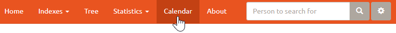
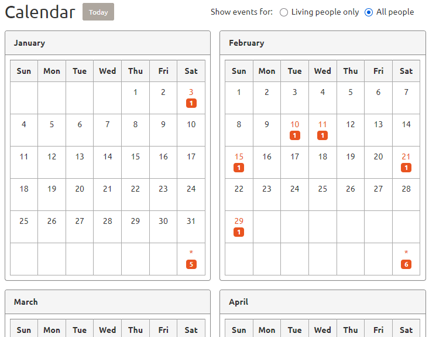
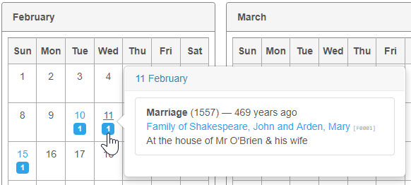

19 Calendar¶
☐ For creators ☑ For visitors
Dynamic Web Extended (DWE) provides an interactive Calendar that displays birth, marriage and death events from the family history. It displays 12 months of the year, typically in a 3 by 4 grid, depending on the width of the browser. The calendar groups events by month and day, regardless of the historical year in which they occurred.
The Calendar is based on the Web Calendar report that is also available in Gramps, and has been updated and modified to work with DWE.
The Calendar is an online display and does not provide a printing facility. Other Gramps reports and addons are available for creating printed calendars if required.
19.1 Calendar display¶
The Calendar is an option when the report is generated, and can be opened through the top-level Calendar menu:

The website creator has previously determined which event types and historical years are included in the Calendar.
Each month displays its dates arranged under weekday headings. Dates that have events show a number indicating how many events are recorded for that month and day.

Figure 28- Calendar display
The Calendar uses the current year to set the weekday positions of dates. Consequently, the weekday shown for an event does not necessarily correspond to the weekday on which the historical event occurred.
19.2 Viewing events¶
Events are listed with the most recent year first.
Visitors can examine events associated with a date in two ways:
-
Hover over a date to see a temporary preview of the events.
-
Click a date to open a popup that remains visible, allowing the visitor to examine the events and follow links to Individual pages.
This image shows hover over date; there is only one event on this date. This event has a description.

Figure 29- Hover over date
19.2.1 Events with an unknown day¶
Events with a known month but an unknown day are grouped under an asterisk (*) in the bottom-right cell of the relevant month. Hovering over or clicking the asterisk displays these events in the same way as events associated with a particular date.
19.2.2 29th February¶
The Calendar includes 29 February every year, even when the current year is not a leap year. This ensures that events recorded on 29 February remain visible.
19.3 Calendar controls¶
19.3.1 Living people only / All people¶
The Calendar provides two options for controlling which events are displayed.
-
Living people only – displays events associated with people considered probably living.
-
All people – displays all events, subject to the report's filtering and privacy settings.
Changing the selection immediately updates the event counts and the events displayed.
A person without a recorded death date is not necessarily considered living. Gramps uses available information and its probable-living rules when determining whether someone is likely to be alive.
These options do not change the information included in the generated website.
19.3.2 Today button¶
The Today button scrolls the Calendar to the current date.
19.4 About section¶
The website creator may provide an optional explanatory note for the Calendar. The note appears in an expandable About... section above the Calendar heading and controls.
The section can be expanded or collapsed. Its state is preserved when switching between Living people only and All people.
19.5 How dates are handled¶
The Calendar uses the month and day recorded for an event, rather than the historical year, to determine where it appears. Only events within the year range specified by the website creator are included.
19.5.1 Dates included¶
The following dates are included in a Calendar:
-
Exact dates — Dates with a known day, month and year.
-
Month-only dates — Dates with a known month and year but no known day.
-
About dates — Approximate dates with a known month.
-
Estimated dates — Estimated dates with a known month.
-
Calculated dates — Calculated dates with a known month.
For About, Estimated and Calculated dates, events with a known day appear on that date. Events with a known month but an unknown day appear under the asterisk (*) for that month.
19.5.2 Dates excluded¶
The following dates are excluded:
-
Year-only dates, where the month is unknown.
-
Empty or unknown dates without usable month information.
-
Dates qualified as Before or After.
-
Dates qualified as From or To.
-
Date ranges and date spans.
These restrictions prevent dates with uncertain boundaries from being displayed as specific calendar dates.
19.6 Privacy and filtering¶
Calendar events are subject to the report creator's selected Gramps filters and privacy settings. Visitors cannot use the Calendar to access individuals or events excluded from the generated report. Selecting All people does not override these restrictions.
For information about configuring the Calendar, see chapter 22 Calendar Options in the report creator section of this guide.
19.7 Married names¶
The website creator can decide to use a woman’s own name or her married name when including birthday events for women. Thus, her name might be different in different events. See also section 23.19 Birthday surname.